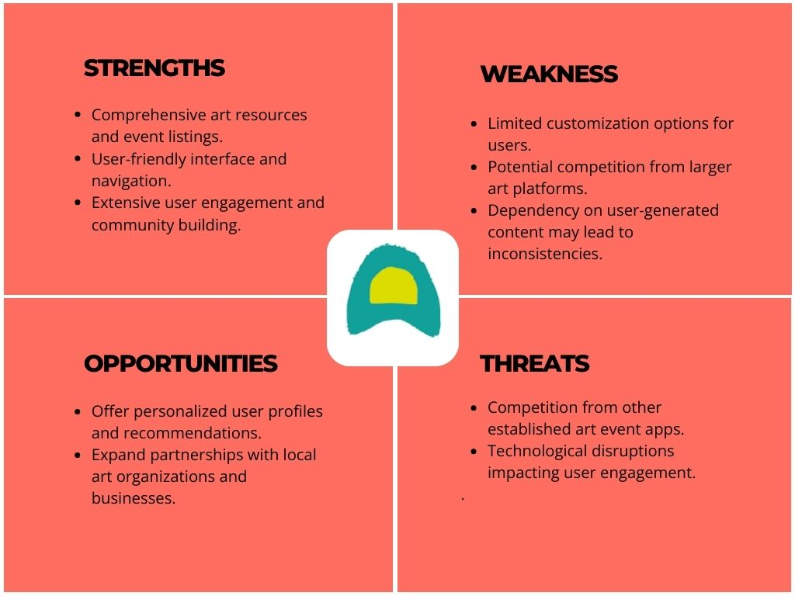
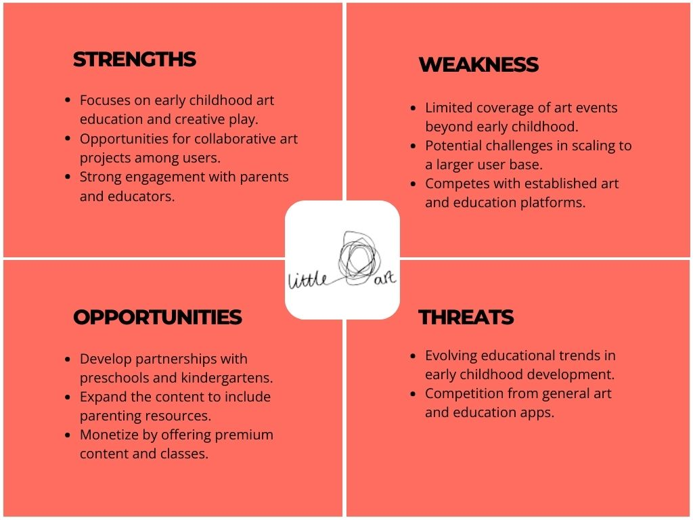

Home Page
My Role
UI/UX designer
Duration
2 months
Tools
Figma, Miro, Canva
My Contributions
As a UX/UI Designer in the Redi School design program, I completed an individual project where I redesigned a workshop website. I dedicated my efforts to solving the design challenges and creating an improved user experience for the website.
My Deliverables
- Competitive Analysis
- User Research
- User Personas & Journey Map
- User Flows
- Wireframing
- Style guide
- Prototyping
- User Testing
Problem Statement:
"Parents seeking engaging and enriching workshops for their children face challenges in inputting their preferences and accessing online registration, resulting in a cumbersome and inefficient user experience."
Competitive Analysis
I initiated the process with thorough competitive research, focusing on workshop providers in Berlin, aiming to grasp their offerings. Additionally, I performed a SWOT analysis for three Berlin-based art apps: "ArtNuts," "Urban Art Kids," and "Little Art.



User Interviews
I conducted insightful interviews with 8 individuals remotely
who expressed keen interest in workshops for themselves or
their children. These findings provided an ongoing reference
point that greatly influenced my design journey.
Some of the main insights were:
"The homepage layout confused me during my first visit."
"Found the paper-only registration process old-fashioned and inconvenient."
"Hard time locating workshop specifics, schedules, and availability."

User Persona & User Journey
To gain a deeper understanding of the user's needs and preferences, I developed a comprehensive user persona and mapped out their journey. This allowed me to identify their pain points and uncover potential opportunities for improvement.


Possible Solution
The solution is to create a visually appealing and
user-friendly website that offers online registration and
provides clear information about workshops. By enhancing user
engagement and accessibility through intuitive design and
seamless navigation, the website will empower parents to
easily explore, select, and register for workshops that meet
their children's needs and interests.
User flow
Based on the key objectives of persona, I created a user flow that allows users to navigate through the website to accomplish their goals.

Site Map
I created a concise sitemap consisting of four main pages: Home, Workshops, About, and Contact form. This intuitive structure enables users to easily navigate and locate the information they need within the website.

Wireframes
I have created low-fidelity wireframes based on initial ideas and details. When the structure of content and functionality was in place, I moved on to the mid-fidelity Wireframes followed by high-fidelity wireframes.
After ideating and generating multiple concept sketches, I proceeded to develop low-fidelity wireframes to further refine the design. These wireframes provided a Basic structure for the content and functionality. Then, I progressed to mid-fidelity wireframes, adding more details and elements. Finally, I created high-fidelity wireframes to capture the final visual design and user interface of the Project.

Re-Design
Before/After - Home Page
Before the redesign, the homepage was perplexing and lacked a clear starting point. After the redesign, it presents a concise format that highlights the website's purpose and the variety of workshops offered.

Before/After - Workshop Page
Previously, the workshop page only displayed weekly workshops, while vacation and parent-child workshops were on separate pages. In the redesign, I unified all workshops onto a single page. This enhancement simplifies the user experience, allowing visitors to easily explore and choose from various workshop options, thus facilitating informed selections.

Before/After - Registration Page
Recognizing the limitation of relying solely on paper-based registration forms and the absence of an online option, I implemented an online registration form. This deliberate enhancement was designed to maximize convenience and effectively address the identified user concern.

Before/After - About Page
I integrated their concept and "About" information into a single page, facilitating a comprehensive understanding of their design philosophy, ideology, and founding journey for users.

Before/After - Contact Page
I modified the contact form and incorporated their Instagram profile, aiming to expand their online presence and enhance visibility. This adjustment increases the potential for attracting attention and facilitating workshop bookings.

Usability Testing
After redesigning the Creative Kids of Berlin website, a usability testing phase was conducted to assess the effectiveness of the changes made and gather feedback from users. The objective was to ensure that the redesigned website addressed the usability issues identified earlier and provided an improved user experience.
Six participants, representing both parents seeking children's workshops and creative-minded young adults, were selected for the moderated remote usability test. They were given tasks to evaluate the website's effectiveness:
-
Choose and register for a summer workshop suitable for an 8-year-old.
-
Find additional details about a specific workshop and explore contact options.
-
Reserve a weekly workshop on a Thursday, conducted in German, catering to a 12-year-old's interests.
6
participants
28-40
Age range
3
Tasks
20
Mins each
Test Results
-
Improved Navigation: Participants found workshops more easily due to enhanced labels and categories.
-
Streamlined Registration: The user-friendly online registration system simplified the process.
-
Enhanced Information: Detailed workshop information, including schedules and pricing, was appreciated.
-
Favorable Visual Design: The visually engaging design received positive feedback.
-
Efficient Online Interaction: Online registration and payment options were well-received for their convenience.
Style Guide

Prototype
Summary
The Creative Kids website redesign has been an enriching journey that honed my skills in user-centered design and problem-solving. By delving into user research and conducting insightful interviews, I gained invaluable insights into user preferences. The iterative design process, coupled with user feedback, played a pivotal role in shaping the outcome.